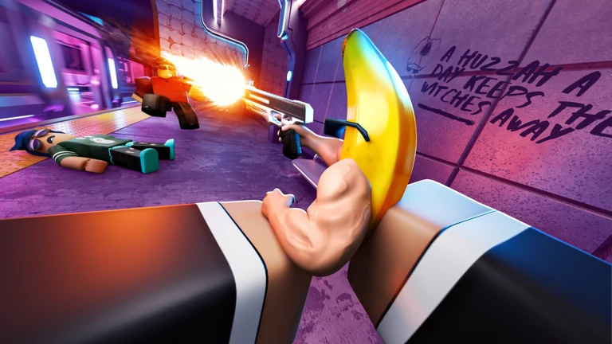
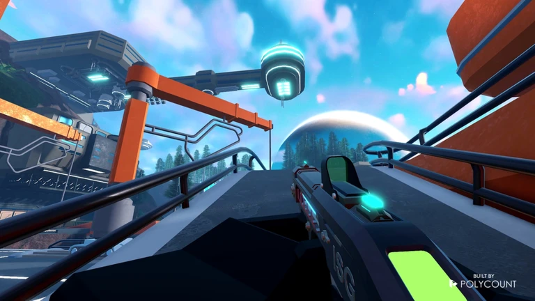
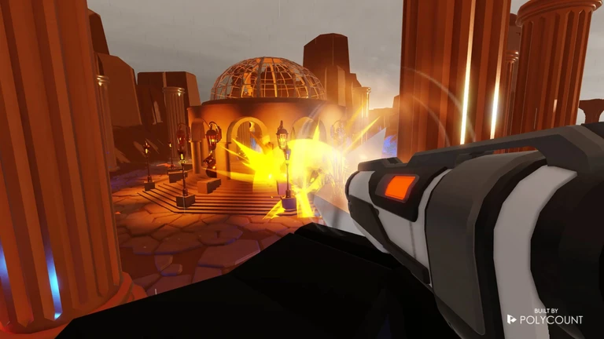

Overview
Project summary
I led studio-side development, programming, game design, and UI import support with assistance from artists.

Lead Developer
Roblox shooter project with advanced first-person gun systems, server-sided projectile validation, client-rendered visuals, locomotion, live ops, and matchmaking.
Overview
I led studio-side development, programming, game design, and UI import support with assistance from artists.
Systems
Built gun behavior including camera bobbing, recoil, sounds, animations, projectile handling, and supporting weapon features.
Handled projectile collision securely on the server using position snapshots so hit detection feels responsive while staying server authoritative.
Supported bullet drop, gravity, bouncing for throwables, and bullet magnetism for aim assist or lock-on style weapons.
Rendered gun models, projectile visuals, and related effects mostly client-side to improve server performance.
Calculated locomotion animations client-side for all players, including footsteps, jump and land sounds, strafing, and blended movement directions.
Supported battle pass content, new game modes and events, collaborations, lobby and matchmaking rework, and MemoryStore-based matchmaking.
Media

Gameplay media example for Guns & Glory.

Gameplay media example for Guns & Glory.
Gameplay trailer for Guns & Glory.